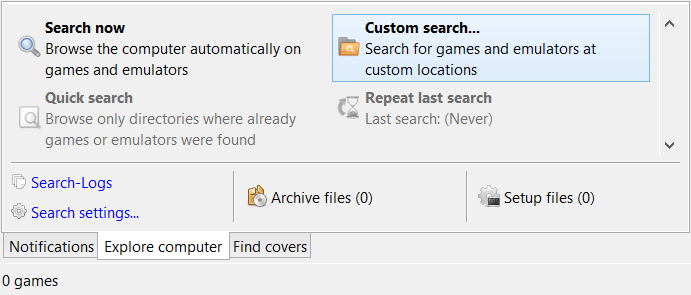
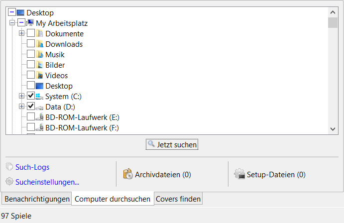

Computer durchsuchen
Benutzerdefinierte Suche
Mit dieser Funktion kann nach Spielen oder Emulatoren an benutzerdefinierten Orten auf dem Computer gesucht werden.
- Im Informationsbereich den Tab "Computer durchsuchen" anklicken.
- Die Schaltfläche "Benutzerdefinierte Suche..." anklicken.

In dieser Ansicht werden die Orte festgelegt, an denen nach Spielen oder Emulatoren gesucht werden soll.
- Die gewünschten Orte anklicken.
- Die Schaltfläche "Jetzt suchen" anklicken.
